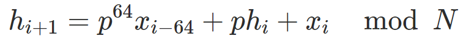

Fast SIMD-Based Chunking Algorithm
Yehonatan Dude, Michael Hirsch, Yair Toaff
PSC 2019
Outline
- Background
- Chunking Problem
- Traditional Solutions
- Our Solution
- Future Work
Background - Deduplication
A technique for eliminating
duplicate copies of repeating data.
Deduplication process in a nutshell
- Divide into chunks
- Calculate the chunks' hashes
- Store chunks uniquely
Background - Chunking Methods
How to chunk the input data
- Simple - fixed size.
- Content aware - files, objects, applications.
- Content sensitive - rolling hash.
def byhash(text):
window_size = 4
criteria = lambda h, k=0x1f<<120: k == (h & k)
for offset in range(window_size, len(text)):
if criteria(hash(text[offset - window_size : offset])):
yield offset + 1
Background - Deduplication Performance
In 2017 we worked on a deduplication engine,
and we tried to improve its performance.
Chunking Problem
Given a stream of bytes, divide it into chunks for deduplication.
- Output identical chunks for identical data
- Good chunk size distribution.
- Good performance.
- Works for any input (photo, DB, text, random, etc...)
Traditional Solutions
Karp-Rabin
Cyclic Polynomial
| Karp-Rabin | Cyclic Polynomial |
|---|---|
 |
|
|  |  |
Proposed Solution
How does it work:
- Work with rolling vectors
- calculate a hash of byte size
-
Calculate the criteria, in a way that:
- Number of calculations are constant
unrelated to the vector size - Can find a cutting point at a byte offset
- Number of calculations are constant
Measured Results
| Algorithm | Random Data | Corpus Data |
|---|---|---|
| Karp-Rabin | 975 MB/s | 927 MB/s |
| Cyclic-Polynomial | 1675 MB/s | 1676 MB/s |
| Ours | 6715 MB/s | 7136 MB/s |
| Chunking Alg. | Dedup Perf. | LZ4 | SHA1 | Other | Chunking |
|---|---|---|---|---|---|
| Karp-Rabin | 262 MB/s | 63.9% | 4.1% | 3.8% | 28.1% |
| Ours | 345 MB/s | 84.5% | 5.4% | 5.1% | 4.7% |
- Same Distribution
- Faster Chunking Performance
- Faster Overall Performance
Future Work
A chunking algorithm that is
Backward compatible
Does the same amount of work
The bigger the vector size
the faster it works
Does the same amount of work
The bigger the vector size
the faster it works